Code
load(here::here("Lab-2", "Data_Images", "columbia-river.rda"))Lab 2 MARSS models
Describe what data set you will work with and any subsetting you decided on. For example, you may have decided to look only at a section of the ESU that your team was assigned.
Load the data.
load(here::here("Lab-2", "Data_Images", "columbia-river.rda"))Look at the data.
esu <- unique(columbia.river$esu_dps)
esu[1] "Steelhead (Middle Columbia River DPS)"
[2] "Steelhead (Upper Columbia River DPS)"
[3] "Steelhead (Lower Columbia River DPS)"
[4] "Salmon, coho (Lower Columbia River ESU)"
[5] "Salmon, Chinook (Lower Columbia River ESU)"plotesu <- function(esuname){
df <- columbia.river %>% subset(esu_dps %in% esuname)
ggplot(df, aes(x=spawningyear, y=log(value), color=majorpopgroup)) +
geom_point(size=0.2, na.rm = TRUE) +
theme(strip.text.x = element_text(size = 3)) +
theme(axis.text.x = element_text(size = 5, angle = 90)) +
facet_wrap(~esapopname) +
ggtitle(paste0(esuname, collapse="\n"))
}
#Chinook
plotesu(esu[5])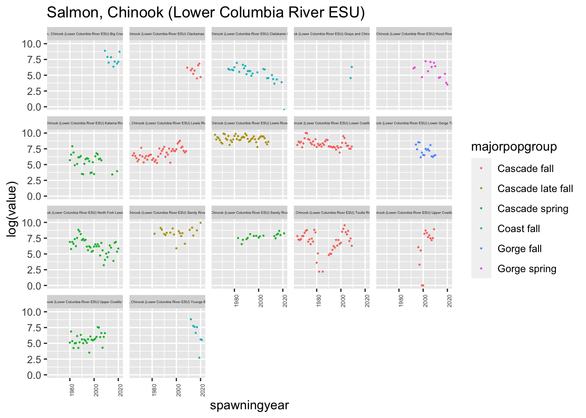
Wrangle the data.
We had some issues with one of the populations having duplicated entries, with some being NA and some having values, (Lower Gorge Tributaries - fall) and we also had a lot of ESA populations, so we decided to focus only on the Cascade populations.
chin_c_r<-columbia.river %>% subset(esu_dps == esu[5])
chin_c_r %>%
filter(majorpopgroup %in% c("Cascade fall", "Cascade late fall", "Cascade spring")) %>% ggplot(aes(x=spawningyear, y=log(value), color=majorpopgroup)) +
geom_point(size=0.2, na.rm = TRUE) +
theme(strip.text.x = element_text(size = 3)) +
theme(axis.text.x = element_text(size = 5, angle = 90)) +
facet_wrap(~esapopname) +
ggtitle(paste0(esu[5], collapse="\n"))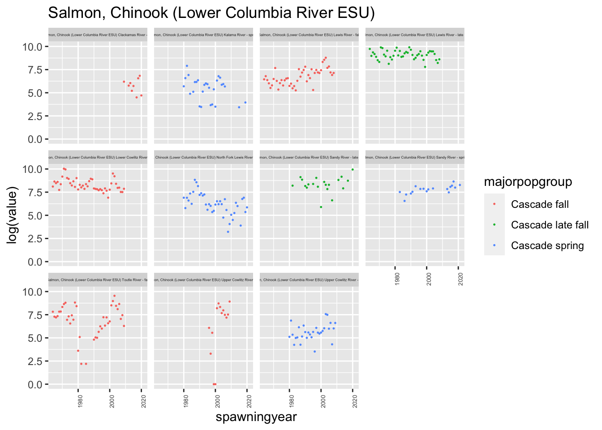
Formatting data for MARSS:
chin_newdat <- chin_c_r %>%
filter(majorpopgroup %in% c("Cascade fall", "Cascade late fall", "Cascade spring")) %>% #just looking at cascade populations
mutate(log.spawner = log(value)) %>% # create a column called log.spawner
select(esapopname, spawningyear, log.spawner) %>% # get just the columns that I need
pivot_wider(names_from = esapopname, values_from = log.spawner) %>%
column_to_rownames(var = "spawningyear") %>% # make the years rownames
as.matrix() %>% # turn into a matrix with year down the rows
t() # make time across the columns
# MARSS complains if I don't do this
chin_newdat[is.na(chin_newdat)] <- NA
#clean up row names
tmp <- rownames(chin_newdat)
tmp <- stringr::str_replace(tmp, "Salmon, Chinook [(]Lower Columbia River ESU[)]", "")
tmp <- stringr::str_trim(tmp)
rownames(chin_newdat) <- tmp
#look at data
print(chin_newdat[,1:5]) 1964 1965 1966 1967 1968
Clackamas River - fall NA NA NA NA NA
Lewis River - fall 6.448889 6.792344 6.368187 6.018593 5.517453
Lower Cowlitz River - fall 8.105308 8.649449 8.472614 8.610137 7.741968
Toutle River - fall 7.821643 7.289611 7.206377 7.353722 7.830028
Upper Cowlitz River - fall NA NA NA NA NA
Lewis River - late fall 9.732521 8.978030 9.361085 9.181015 8.876265
Sandy River - late fall NA NA NA NA NA
Kalama River - spring NA NA NA NA NA
North Fork Lewis River - spring NA NA NA NA NA
Sandy River - spring NA NA NA NA NA
Upper Cowlitz River - spring NA NA NA NA NAEach group has the same general tasks, but you will adapt them as you work on the data.
Create estimates of spawner abundance for all missing years and provide estimates of the decline from the historical abundance.
Evaluate support for the major population groups. Are the populations in the groups more correlated than outside the groups?
Evaluate the evidence of cycling in the data. We will talk about how to do this on the Tuesday after lab.
Address the following in your methods
Describe your assumptions about the x and how the data time series are related to x.
We tested 2 different assumptions about how the data time series are related to x.
All the esa populations are independent populations: this means that each data series (y) corresponds to an independent x series.
There are 3 Cascade populations based on run timing, and the river surveys are all surveying these populations according to run time: this means that each data series (y) corresponds to the x series that relates to its run timing (major population group).
Within both of these, we tested independent process errors with different variances (Q is “diagonal and unequal”), as well as independent process errors with equal variances (Q is “diagonal and equal”), and equal variance covariance (Q is “equalvarcov”).
We assumed that each population has its own growth rate (U is unequal).
Write out assumptions in matrix form:
11 independent populations
\[ \begin{bmatrix} x_{t,1} \\ x_{t,2}\\ ... \\x_{t,11} \end{bmatrix} = \begin{bmatrix} x_{t-1,1} \\ x_{t-1,2}\\ ... \\x_{t-1,11} \end{bmatrix} + \begin{bmatrix} u_1 \\ u_2\\ ... \\u_{11} \end{bmatrix} + w_t \text{ where } w_t \sim MVN(0, \mathbf{Q}) \]
where:
\[ \mathbf{Q} = \begin{bmatrix} q_1 & 0 & ...& 0\\ 0 & q_2 & ...& 0\\ \vdots & 0 & \ddots & \vdots\\ 0 & 0 & 0 & q_{11} \end{bmatrix} \]
or:
\[ \mathbf{Q} = \begin{bmatrix} q & 0 & ...& 0\\ 0 & q & ...& 0\\ \vdots & 0 & \ddots & \vdots\\ 0 & 0 & 0 & q \end{bmatrix} \]
or:
\[ \mathbf{Q} = \begin{bmatrix} q & p & ...& p\\ p & q & ...& p\\ \vdots & p & \ddots & \vdots\\ p & p & p & q \end{bmatrix} \]
\[ \begin{bmatrix} y_{t,1} \\ y_{t, 2} \\ \vdots \\y_{t,11} \end{bmatrix} = \begin{bmatrix}1 & 0 & ...& 0\\ 0 & 1 & ...& 0\\ \vdots & 0 & \ddots & \vdots\\ 0 & 0 & 0 & 1\end{bmatrix} \begin{bmatrix} x_{t,1} \\ x_{t, 2} \\ \vdots \\x_{t,11} \end{bmatrix} + \mathbf{a} + \mathbf{v_t} \text{ where } \mathbf{v_t} \sim MVN(0, \mathbf{R}) \]
where:
\[ \mathbf{R} = \begin{bmatrix} r & 0 & ...& 0\\ 0 & r & ...& 0\\ \vdots & 0 & \ddots & \vdots\\ 0 & 0 & 0 & r \end{bmatrix} \]
\[ \begin{bmatrix} x_{t,1} \\ x_{t,2}\\ x_{t,3} \end{bmatrix} = \begin{bmatrix} x_{t-1,1} \\ x_{t-1,2}\\ x_{t-1,3} \end{bmatrix} + \begin{bmatrix} u_1 \\ u_2\\ u_3 \end{bmatrix} + w_t \text{ where } w_t \sim MVN(0, \mathbf{Q})\]
where Q is as above but is 3x3 instead of 11x11.
\[ \begin{bmatrix} y_{t,1} \\ y_{t, 2} \\ \vdots \\y_{t,11} \end{bmatrix} = \begin{bmatrix}1 & 0 & 0\\ 1 & 0 & 0\\ \vdots & 1 & \vdots\\ 0 & 1 & 0 \\ \vdots & \vdots & \vdots\\ \vdots & 0 & 1 \\ \vdots & \vdots & \vdots \end{bmatrix} \begin{bmatrix} x_{t,1} \\ x_{t, 2} \\x_{t,3} \end{bmatrix} + \mathbf{a} + \mathbf{v_t} \text{ where } \mathbf{v_t} \sim MVN(0, \mathbf{R}) \]
and R is the same as above.
mod.list1 <- list(
U = "unequal",
R = "diagonal and equal",
Q = "diagonal and unequal"
)
fit1<-MARSS(chin_newdat, model=mod.list1, method = "BFGS")Success! Converged in 167 iterations.
Function MARSSkfas used for likelihood calculation.
MARSS fit is
Estimation method: BFGS
Estimation converged in 167 iterations.
Log-likelihood: -414.6942
AIC: 897.3884 AICc: 905.3217
Estimate
R.diag 4.02e-01
U.X.Clackamas River - fall -3.53e-02
U.X.Lewis River - fall 2.99e-02
U.X.Lower Cowlitz River - fall -2.06e-02
U.X.Toutle River - fall -2.37e-02
U.X.Upper Cowlitz River - fall 2.26e-01
U.X.Lewis River - late fall -5.80e-03
U.X.Sandy River - late fall 1.97e-02
U.X.Kalama River - spring -5.68e-02
U.X.North Fork Lewis River - spring -2.02e-02
U.X.Sandy River - spring 2.56e-02
U.X.Upper Cowlitz River - spring 3.71e-02
Q.(X.Clackamas River - fall,X.Clackamas River - fall) 2.50e-15
Q.(X.Lewis River - fall,X.Lewis River - fall) 2.57e-02
Q.(X.Lower Cowlitz River - fall,X.Lower Cowlitz River - fall) 1.48e-14
Q.(X.Toutle River - fall,X.Toutle River - fall) 7.25e-01
Q.(X.Upper Cowlitz River - fall,X.Upper Cowlitz River - fall) 7.07e+00
Q.(X.Lewis River - late fall,X.Lewis River - late fall) 1.73e-19
Q.(X.Sandy River - late fall,X.Sandy River - late fall) 2.82e-02
Q.(X.Kalama River - spring,X.Kalama River - spring) 5.91e-01
Q.(X.North Fork Lewis River - spring,X.North Fork Lewis River - spring) 2.16e-01
Q.(X.Sandy River - spring,X.Sandy River - spring) 8.73e-14
Q.(X.Upper Cowlitz River - spring,X.Upper Cowlitz River - spring) 1.13e-13
x0.X.Clackamas River - fall 7.57e+00
x0.X.Lewis River - fall 6.20e+00
x0.X.Lower Cowlitz River - fall 8.78e+00
x0.X.Toutle River - fall 7.70e+00
x0.X.Upper Cowlitz River - fall -1.51e+00
x0.X.Lewis River - late fall 9.22e+00
x0.X.Sandy River - late fall 7.94e+00
x0.X.Kalama River - spring 7.05e+00
x0.X.North Fork Lewis River - spring 6.98e+00
x0.X.Sandy River - spring 6.76e+00
x0.X.Upper Cowlitz River - spring 4.44e+00
Initial states (x0) defined at t=0
Standard errors have not been calculated.
Use MARSSparamCIs to compute CIs and bias estimates.autoplot(fit1, plot.type="fitted.ytT")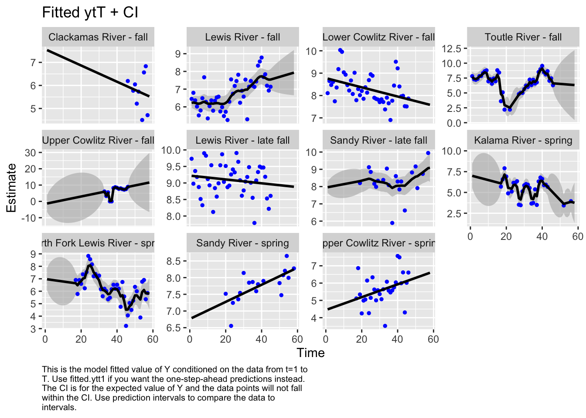
plot.type = fitted.ytT Finished plots.# resid1<-autoplot(fit1, plot.type="residuals")
# headings<-c('Model innovation', "Cholesky standardized model smoothation", "Cholesky standaradized state smoothation", "Residuals normality test", "Cholesky standaradized model innnovation residuals acf")
plot(fit1, plot.type = "model.resids.ytt1")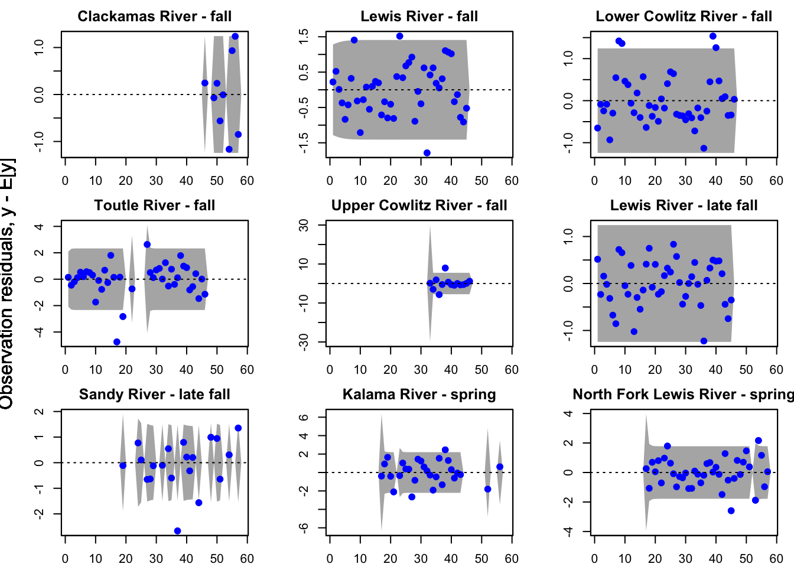
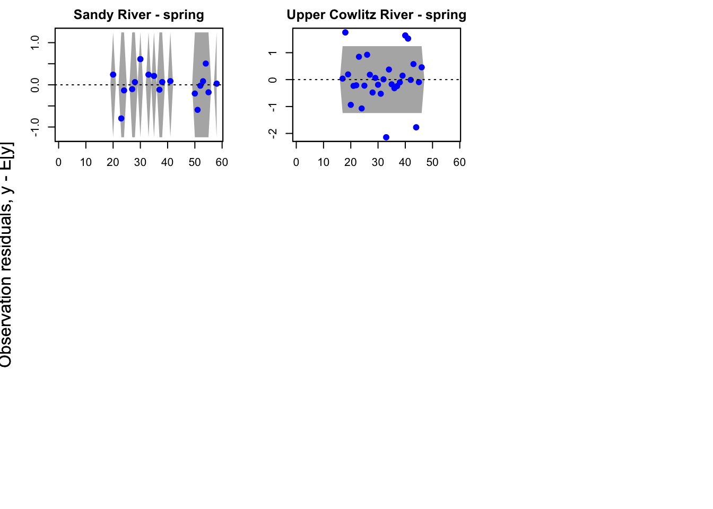
plot type = model.resids.ytt1plot(fit1, plot.type = "qqplot.std.model.resids.ytt1")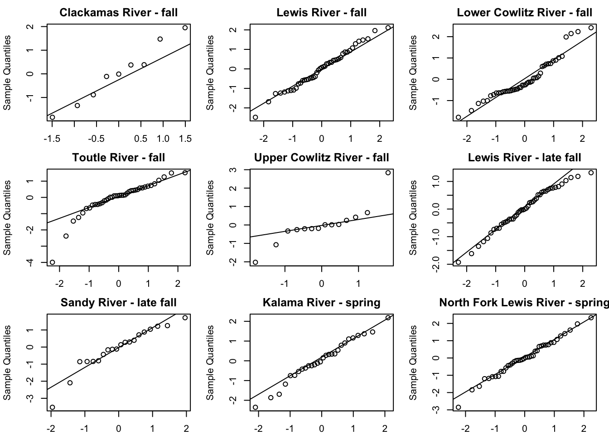
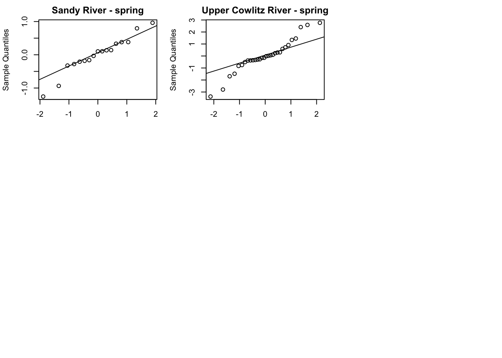
plot type = qqplot.std.model.resids.ytt1plot(fit1, plot.type = "acf.std.model.resids.ytt1")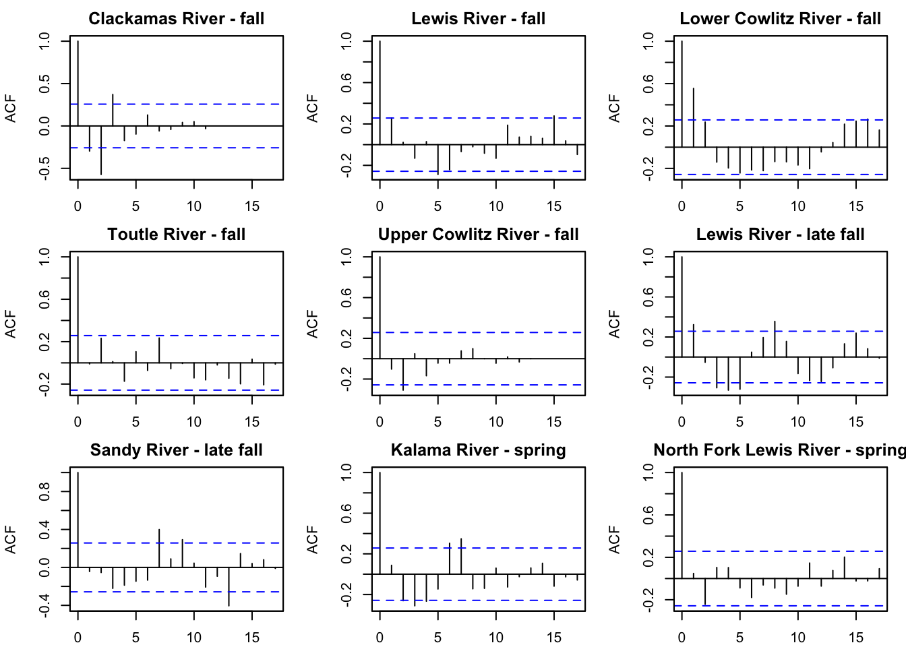
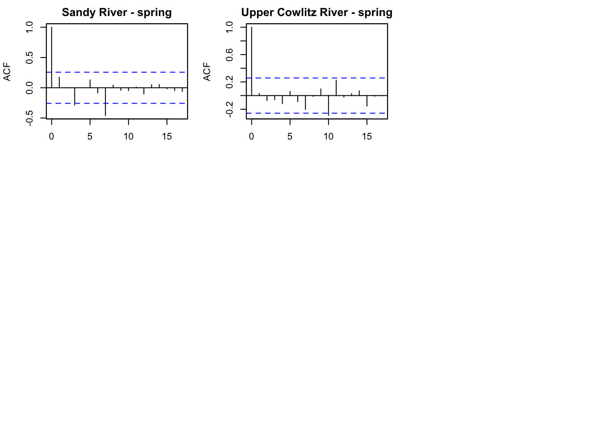
plot type = acf.std.model.resids.ytt1mod.list2 <- list(
U = "unequal",
R = "diagonal and equal",
Q = "diagonal and equal"
)
fit2<-MARSS(chin_newdat, model=mod.list2, control = list(maxit = 2000))Success! abstol and log-log tests passed at 1328 iterations.
Alert: conv.test.slope.tol is 0.5.
Test with smaller values (<0.1) to ensure convergence.
MARSS fit is
Estimation method: kem
Convergence test: conv.test.slope.tol = 0.5, abstol = 0.001
Estimation converged in 1328 iterations.
Log-likelihood: -489.2305
AIC: 1026.461 AICc: 1030.332
Estimate
R.diag 0.72949
U.X.Clackamas River - fall -0.03785
U.X.Lewis River - fall 0.02564
U.X.Lower Cowlitz River - fall -0.01440
U.X.Toutle River - fall -0.00564
U.X.Upper Cowlitz River - fall 0.36757
U.X.Lewis River - late fall -0.01337
U.X.Sandy River - late fall 0.02332
U.X.Kalama River - spring -0.06396
U.X.North Fork Lewis River - spring -0.02687
U.X.Sandy River - spring 0.02783
U.X.Upper Cowlitz River - spring 0.02691
Q.diag 0.09185
x0.X.Clackamas River - fall 7.71621
x0.X.Lewis River - fall 6.28414
x0.X.Lower Cowlitz River - fall 8.50382
x0.X.Toutle River - fall 7.61118
x0.X.Upper Cowlitz River - fall -8.27194
x0.X.Lewis River - late fall 9.30977
x0.X.Sandy River - late fall 7.89736
x0.X.Kalama River - spring 7.49044
x0.X.North Fork Lewis River - spring 7.27055
x0.X.Sandy River - spring 6.65318
x0.X.Upper Cowlitz River - spring 4.92931
Initial states (x0) defined at t=0
Standard errors have not been calculated.
Use MARSSparamCIs to compute CIs and bias estimates.autoplot(fit2, plot.type="fitted.ytT")
plot.type = fitted.ytT 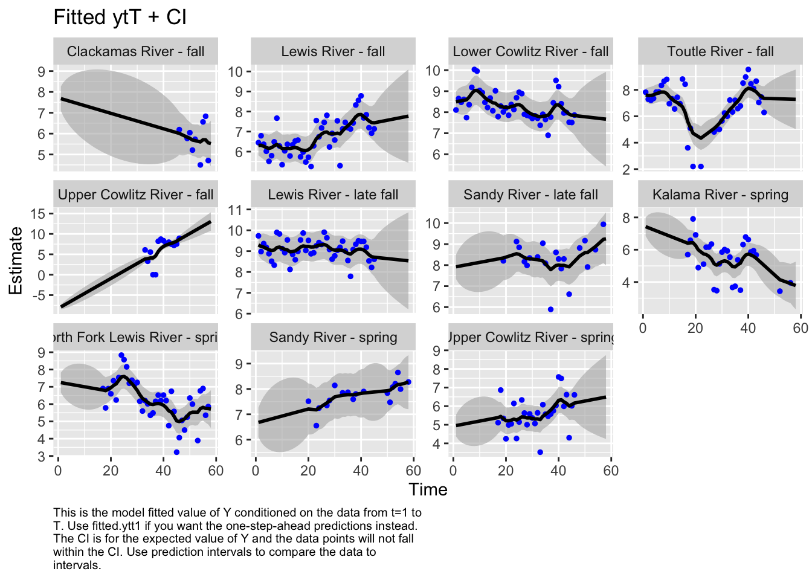
Finished plots.mod.list3 <- list(
U = "unequal",
R = "diagonal and equal",
Q = "equalvarcov"
)
fit3<-MARSS(chin_newdat, model=mod.list3, control = list(maxit = 2000))Success! abstol and log-log tests passed at 1128 iterations.
Alert: conv.test.slope.tol is 0.5.
Test with smaller values (<0.1) to ensure convergence.
MARSS fit is
Estimation method: kem
Convergence test: conv.test.slope.tol = 0.5, abstol = 0.001
Estimation converged in 1128 iterations.
Log-likelihood: -470.7432
AIC: 991.4863 AICc: 995.6934
Estimate
R.diag 0.61116
U.X.Clackamas River - fall -0.12651
U.X.Lewis River - fall 0.05037
U.X.Lower Cowlitz River - fall 0.00770
U.X.Toutle River - fall 0.01946
U.X.Upper Cowlitz River - fall 0.37609
U.X.Lewis River - late fall 0.01014
U.X.Sandy River - late fall -0.00839
U.X.Kalama River - spring -0.09167
U.X.North Fork Lewis River - spring -0.06193
U.X.Sandy River - spring -0.00388
U.X.Upper Cowlitz River - spring 0.01885
Q.diag 0.20574
Q.offdiag 0.15919
x0.X.Clackamas River - fall 12.71323
x0.X.Lewis River - fall 6.24942
x0.X.Lower Cowlitz River - fall 8.59167
x0.X.Toutle River - fall 7.62076
x0.X.Upper Cowlitz River - fall -7.61327
x0.X.Lewis River - late fall 9.30191
x0.X.Sandy River - late fall 9.75499
x0.X.Kalama River - spring 9.24570
x0.X.North Fork Lewis River - spring 9.30467
x0.X.Sandy River - spring 8.59831
x0.X.Upper Cowlitz River - spring 6.27949
Initial states (x0) defined at t=0
Standard errors have not been calculated.
Use MARSSparamCIs to compute CIs and bias estimates.autoplot(fit3, plot.type="fitted.ytT")MARSSresiduals.tT reported warnings. See msg element or attribute of returned residuals object.
plot.type = fitted.ytT 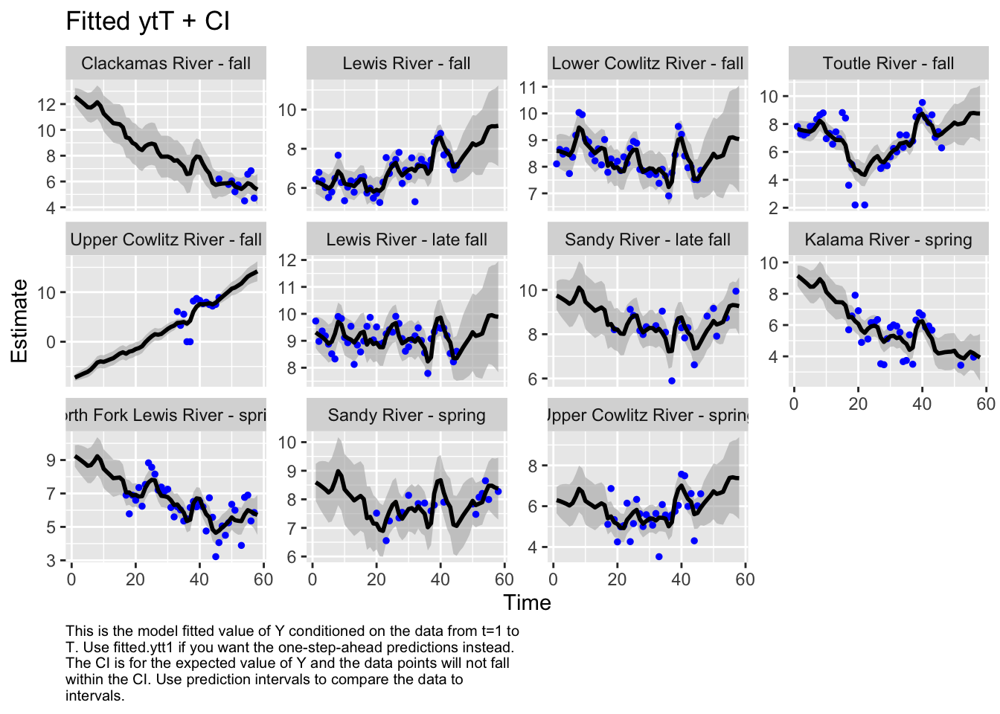
Finished plots.mod.list4<-mod.list1
rownames(chin_newdat) [1] "Clackamas River - fall" "Lewis River - fall"
[3] "Lower Cowlitz River - fall" "Toutle River - fall"
[5] "Upper Cowlitz River - fall" "Lewis River - late fall"
[7] "Sandy River - late fall" "Kalama River - spring"
[9] "North Fork Lewis River - spring" "Sandy River - spring"
[11] "Upper Cowlitz River - spring" mod.list4$Z<-factor(c(rep("fa", 5), rep("l_fa", 2), rep("Sp", 4))) #creating factor based on run times
#mod.list4
fit4<-MARSS(chin_newdat, model = mod.list4, method = "BFGS")Success! Converged in 243 iterations.
Function MARSSkfas used for likelihood calculation.
MARSS fit is
Estimation method: BFGS
Estimation converged in 243 iterations.
Log-likelihood: -501.0319
AIC: 1038.064 AICc: 1040.228
Estimate
A.Lewis River - fall 1.41e+00
A.Lower Cowlitz River - fall 2.96e+00
A.Toutle River - fall 1.52e+00
A.Upper Cowlitz River - fall 4.49e-01
A.Sandy River - late fall -7.45e-01
A.North Fork Lewis River - spring 8.78e-01
A.Sandy River - spring 2.49e+00
A.Upper Cowlitz River - spring 1.71e-01
R.diag 1.03e+00
U.fa 1.97e-03
U.l_fa -1.99e-03
U.Sp -2.08e-02
Q.(fa,fa) 2.31e-01
Q.(l_fa,l_fa) 3.88e-12
Q.(Sp,Sp) 1.39e-12
x0.fa 5.49e+00
x0.l_fa 9.13e+00
x0.Sp 6.10e+00
Initial states (x0) defined at t=0
Standard errors have not been calculated.
Use MARSSparamCIs to compute CIs and bias estimates.autoplot(fit4, plot.type="fitted.ytT")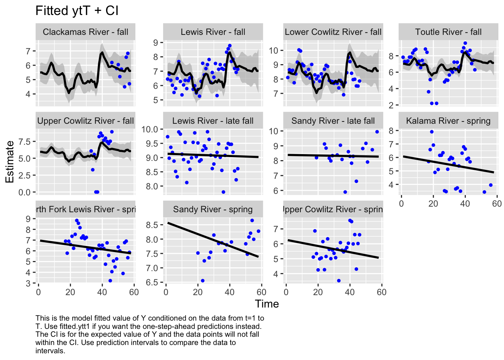
plot.type = fitted.ytT Finished plots.mod.list5<-mod.list4
mod.list5$Q<-"diagonal and equal"
fit5<-MARSS(chin_newdat, model = mod.list5, control = list(maxit = 2000))Success! abstol and log-log tests passed at 419 iterations.
Alert: conv.test.slope.tol is 0.5.
Test with smaller values (<0.1) to ensure convergence.
MARSS fit is
Estimation method: kem
Convergence test: conv.test.slope.tol = 0.5, abstol = 0.001
Estimation converged in 419 iterations.
Log-likelihood: -512.9568
AIC: 1057.914 AICc: 1059.624
Estimate
A.Lewis River - fall 1.61011
A.Lower Cowlitz River - fall 3.15768
A.Toutle River - fall 1.70686
A.Upper Cowlitz River - fall 0.65164
A.Sandy River - late fall -0.84303
A.North Fork Lewis River - spring 0.91788
A.Sandy River - spring 2.52482
A.Upper Cowlitz River - spring 0.19157
R.diag 1.08461
U.fa 0.00745
U.l_fa 0.01049
U.Sp -0.01849
Q.diag 0.05334
x0.fa 5.29045
x0.l_fa 9.14607
x0.Sp 6.08345
Initial states (x0) defined at t=0
Standard errors have not been calculated.
Use MARSSparamCIs to compute CIs and bias estimates.autoplot(fit5, plot.type="fitted.ytT")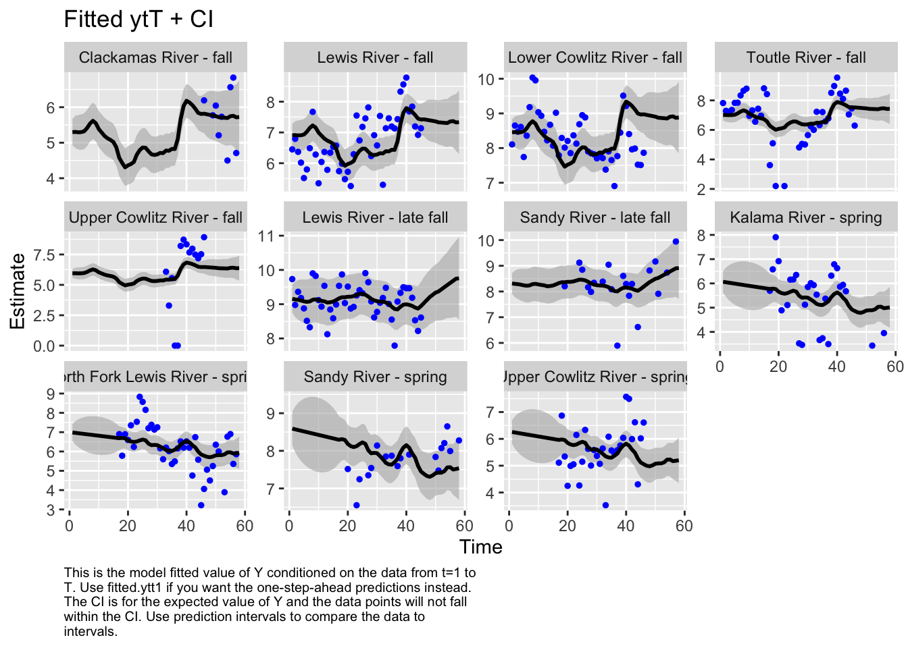
plot.type = fitted.ytT Finished plots.mod.list6<-mod.list4
mod.list6$Q<-"equalvarcov"
fit6<-MARSS(chin_newdat, model = mod.list6, control = list(maxit = 2000))Success! abstol and log-log tests passed at 370 iterations.
Alert: conv.test.slope.tol is 0.5.
Test with smaller values (<0.1) to ensure convergence.
MARSS fit is
Estimation method: kem
Convergence test: conv.test.slope.tol = 0.5, abstol = 0.001
Estimation converged in 370 iterations.
Log-likelihood: -506.724
AIC: 1047.448 AICc: 1049.379
Estimate
A.Lewis River - fall 1.86873
A.Lower Cowlitz River - fall 3.42045
A.Toutle River - fall 1.99521
A.Upper Cowlitz River - fall 0.98958
A.Sandy River - late fall -0.81266
A.North Fork Lewis River - spring 0.93794
A.Sandy River - spring 2.55274
A.Upper Cowlitz River - spring 0.21590
R.diag 1.03257
U.fa 0.02001
U.l_fa 0.00719
U.Sp -0.03876
Q.diag 0.11257
Q.offdiag 0.10630
x0.fa 5.00493
x0.l_fa 9.33436
x0.Sp 7.28177
Initial states (x0) defined at t=0
Standard errors have not been calculated.
Use MARSSparamCIs to compute CIs and bias estimates.autoplot(fit6, plot.type="fitted.ytT")MARSSresiduals.tT reported warnings. See msg element or attribute of returned residuals object.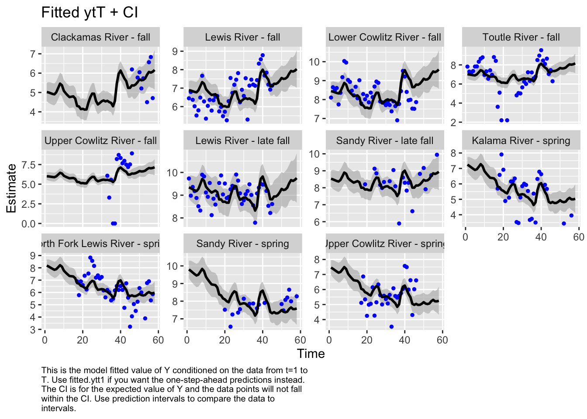
plot.type = fitted.ytT Finished plots.aic <- c(fit1$AICc, fit2$AICc, fit3$AICc, fit4$AICc, fit5$AICc, fit6$AICc)
mods<-seq(1,6)
aic.names<-paste("Model", mods, sep = " ")
a<-matrix(c(aic, aic-min(aic)), nrow = 6, byrow = F)
rownames(a)<-aic.names
a<-a[order(a[,2],decreasing=FALSE),] #order by lowest AICc
knitr::kable(a, col.names = c("AICc", "Delta AIC")) #make a pretty table| AICc | Delta AIC | |
|---|---|---|
| Model 1 | 905.3217 | 0.00000 |
| Model 3 | 995.6934 | 90.37173 |
| Model 2 | 1030.3319 | 125.01016 |
| Model 4 | 1040.2284 | 134.90665 |
| Model 6 | 1049.3786 | 144.05686 |
| Model 5 | 1059.6243 | 154.30253 |
The first model we tested, where we had each population with its own x value and Q was diagonal and unequal, had the lowest AICc. Therefore, we used this model to look at historical abundance.
Estimates of log abundance for each population:
tibble("Pop" = rownames(chin_newdat),"Dat" = chin_newdat[,1], "Est" = fit1$states[,1])# A tibble: 11 × 3
Pop Dat Est
<chr> <dbl> <dbl>
1 Clackamas River - fall NA 7.53
2 Lewis River - fall 6.45 6.23
3 Lower Cowlitz River - fall 8.11 8.76
4 Toutle River - fall 7.82 7.68
5 Upper Cowlitz River - fall NA -1.29
6 Lewis River - late fall 9.73 9.22
7 Sandy River - late fall NA 7.96
8 Kalama River - spring NA 7.00
9 North Fork Lewis River - spring NA 6.96
10 Sandy River - spring NA 6.79
11 Upper Cowlitz River - spring NA 4.48Estimated percent change from historical abundance for each population
#percent change in log abundance
hist.abund<-tibble(Pop = rownames(chin_newdat),
Year1 = fit1$states[,1],
Year58 = fit1$states[,58])
hist.abund<-hist.abund %>% mutate(PChange = ((Year58 - Year1)/abs(Year1)) * 100)
#the estimate for "Upper Cowlitz River - fall" initial population is super low (<1 in real scale), and so the percent change blows up (it's like 1000), so I took this out to make the plot easier to read. Also I think this is probably unrealistic.
hist.abund %>% filter(Pop != "Upper Cowlitz River - fall") %>%
ggplot() + geom_histogram(aes(x = Pop, y = PChange, fill = factor(c(rep("fa", 5), rep("l_fa", 2), rep("Sp", 3)))), stat = "identity") +
geom_hline(aes(yintercept = 0), color = "red") +
scale_fill_discrete(labels = c("Fall", "Late Fall", "Spring"), name = "Run") +
labs(x = "Population", y="% Change From Hist. Abund.") + theme_minimal() +
theme(axis.text.x = element_text(angle = 270, hjust = -0.1))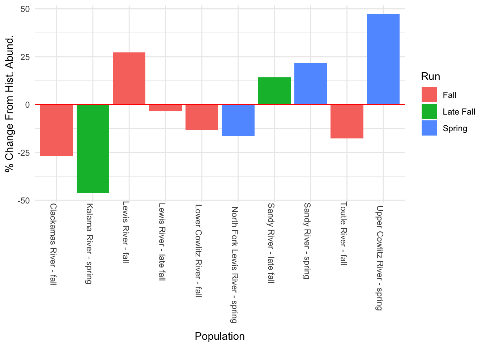
Do your estimates differ depending on the assumptions you make about the structure of the data, i.e. you assumptions about the x’s, Q, and U?
Using our second best model:
hist.abund<-tibble(Pop = rownames(chin_newdat),
Year1 = fit3$states[,1],
Year58 = fit3$states[,58])
hist.abund<-hist.abund %>% mutate(PChange = ((Year58 - Year1)/abs(Year1)) * 100)
#the estimate for "Upper Cowlitz River - fall" is still not great, so I took this out for this plot as well
hist.abund %>% filter(Pop != "Upper Cowlitz River - fall") %>%
ggplot() + geom_histogram(aes(x = Pop, y = PChange, fill = factor(c(rep("fa", 5), rep("l_fa", 2), rep("Sp", 3)))), stat = "identity") +
geom_hline(aes(yintercept = 0), color = "red") +
scale_fill_discrete(labels = c("Fall", "Late Fall", "Spring"), name = "Run") +
labs(x = "Population", y="% Change From Hist. Abund.") + theme_minimal() +
theme(axis.text.x = element_text(angle = 270, hjust = -0.1))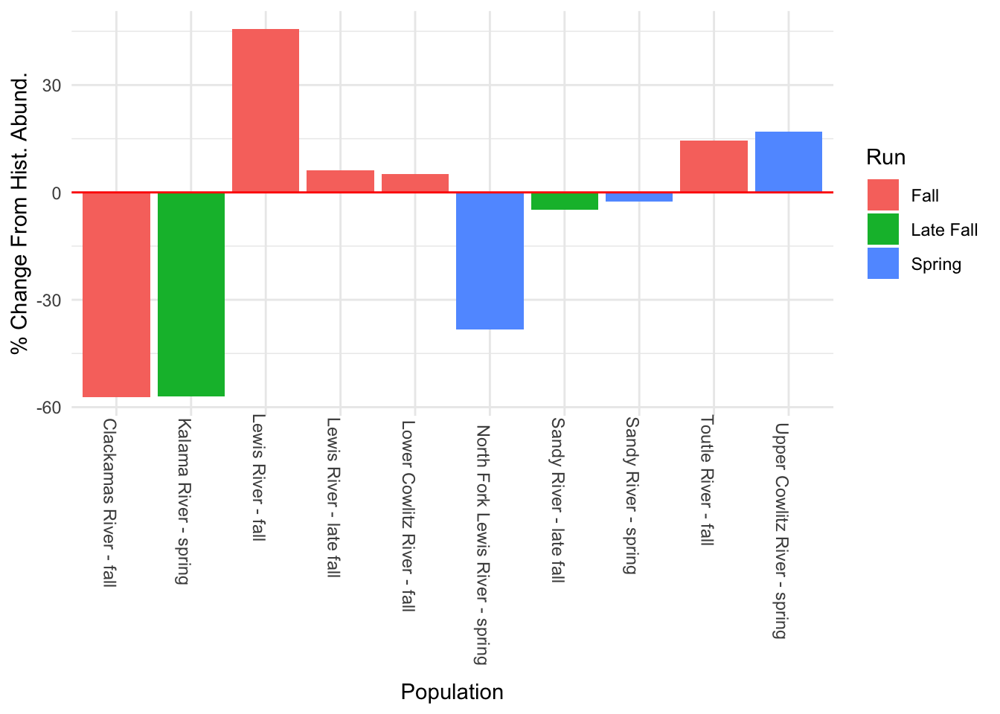
The form of the model does make a difference in the model outputs. For instance, in the first model, the populations of Sandy River spring and late fall are estimated to show an increase, while in the second model, it’s estimated to decrease. Lewis River fall and Lower Cowlitz river fall and Toutle River fall, all show opposite trends in these two models as well.
Look at the correlation plots for the best models for each hypothesis: model 1 for hypothesis 1 and model 4 for hypothesis 2
Population correlations for Model 1
library(corrplot)corrplot 0.92 loaded#different variances and covariances in process error
mod.list1.unconst <- list(
U = "unequal",
R = "diagonal and equal",
Q = "unconstrained"
)
fit1.unconst<-MARSS(chin_newdat, model=mod.list1.unconst, method = "BFGS")Success! Converged in 443 iterations.
Function MARSSkfas used for likelihood calculation.
MARSS fit is
Estimation method: BFGS
Estimation converged in 443 iterations.
Log-likelihood: -358.8132
AIC: 895.6264 AICc: 961.0141
Estimate
R.diag 1.32e-01
U.X.Clackamas River - fall -2.71e-01
U.X.Lewis River - fall 4.57e-02
U.X.Lower Cowlitz River - fall -3.83e-03
U.X.Toutle River - fall 7.86e-03
U.X.Upper Cowlitz River - fall 6.99e-01
U.X.Lewis River - late fall -5.12e-04
U.X.Sandy River - late fall 1.76e-02
U.X.Kalama River - spring -3.23e-02
U.X.North Fork Lewis River - spring -5.04e-02
U.X.Sandy River - spring 2.78e-02
U.X.Upper Cowlitz River - spring -2.99e-02
Q.(1,1) 8.50e-01
Q.(2,1) 2.64e-01
Q.(3,1) 2.36e-01
Q.(4,1) 3.35e-01
Q.(5,1) 2.04e+00
Q.(6,1) 2.20e-01
Q.(7,1) 7.65e-01
Q.(8,1) 1.59e-01
Q.(9,1) -5.58e-02
Q.(10,1) -3.97e-02
Q.(11,1) 1.20e-01
Q.(2,2) 2.44e-01
Q.(3,2) 1.73e-01
Q.(4,2) 3.44e-01
Q.(5,2) 7.86e-01
Q.(6,2) 1.27e-01
Q.(7,2) 2.22e-01
Q.(8,2) 5.38e-04
Q.(9,2) 1.16e-01
Q.(10,2) -4.54e-02
Q.(11,2) 2.40e-01
Q.(3,3) 1.92e-01
Q.(4,3) 2.76e-01
Q.(5,3) 6.69e-01
Q.(6,3) 1.11e-01
Q.(7,3) 2.20e-01
Q.(8,3) 2.56e-01
Q.(9,3) 1.26e-01
Q.(10,3) -1.77e-02
Q.(11,3) 1.63e-01
Q.(4,4) 1.17e+00
Q.(5,4) 2.31e+00
Q.(6,4) 9.04e-02
Q.(7,4) 3.18e-01
Q.(8,4) 4.51e-01
Q.(9,4) 3.11e-01
Q.(10,4) 9.49e-04
Q.(11,4) 1.22e-01
Q.(5,5) 7.91e+00
Q.(6,5) 3.54e-01
Q.(7,5) 1.87e+00
Q.(8,5) 1.03e+00
Q.(9,5) 6.48e-01
Q.(10,5) -2.40e-02
Q.(11,5) -3.67e-01
Q.(6,6) 1.02e-01
Q.(7,6) 1.93e-01
Q.(8,6) 2.66e-02
Q.(9,6) -3.11e-02
Q.(10,6) -2.57e-02
Q.(11,6) 1.94e-01
Q.(7,7) 6.95e-01
Q.(8,7) 2.24e-01
Q.(9,7) -5.12e-02
Q.(10,7) -2.63e-02
Q.(11,7) 8.84e-02
Q.(8,8) 1.11e+00
Q.(9,8) 2.54e-01
Q.(10,8) 8.11e-02
Q.(11,8) -1.62e-01
Q.(9,9) 6.72e-01
Q.(10,9) -1.46e-02
Q.(11,9) -3.18e-01
Q.(10,10) 1.68e-02
Q.(11,10) -5.53e-02
Q.(11,11) 7.53e-01
x0.X.Clackamas River - fall 2.04e+01
x0.X.Lewis River - fall 6.46e+00
x0.X.Lower Cowlitz River - fall 8.48e+00
x0.X.Toutle River - fall 7.70e+00
x0.X.Upper Cowlitz River - fall -1.63e+01
x0.X.Lewis River - late fall 9.34e+00
x0.X.Sandy River - late fall 8.73e+00
x0.X.Kalama River - spring 5.73e+00
x0.X.North Fork Lewis River - spring 8.61e+00
x0.X.Sandy River - spring 6.62e+00
x0.X.Upper Cowlitz River - spring 6.53e+00
Initial states (x0) defined at t=0
Standard errors have not been calculated.
Use MARSSparamCIs to compute CIs and bias estimates.Q1.unconst <- coef(fit1.unconst, type="matrix")$Q
corrmat1.unconst <- diag(1/sqrt(diag(Q1.unconst))) %*% Q1.unconst %*% diag(1/sqrt(diag(Q1.unconst)))
corrplot(corrmat1.unconst)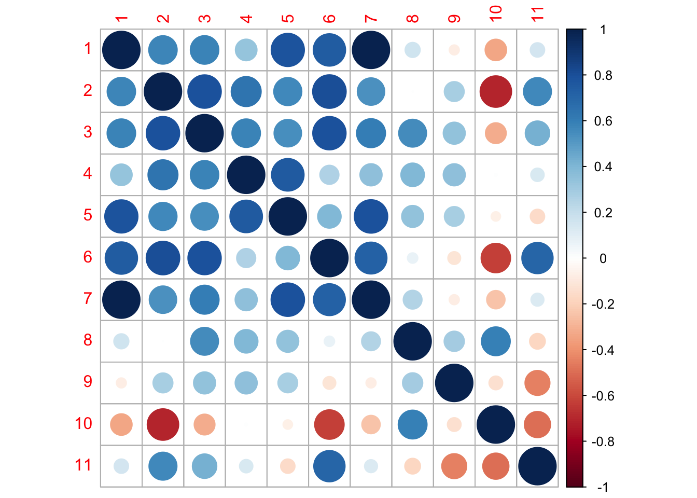
For model 1 (with Q changed to unconstrained so we can see a correlation matrix), abundances from the Clackamas fall (1) and Sandy River late fall (7) populations are highly positively correlated. These populations are very close geographically. In fact, populations 1-7 are all positively correlated; these are the fall run populations and may be influenced by the same environmental variables. Spring run populations demonstrate less association with each other and with the fall run fish. These results suggest that we could possibly group fall and late fall runs together, but there is little support for grouping the separate spring run populations.
We can similarly look at an unconstrained Q if we group the populations:
mod.list4.unconst <- list(
U = "unequal",
R = "diagonal and equal",
Q = "unconstrained",
Z=factor(c(rep("fa", 5), rep("l_fa", 2), rep("Sp", 4)))
)
fit4.unconst<-MARSS(chin_newdat, model=mod.list4.unconst, method = "BFGS")Success! Converged in 187 iterations.
Function MARSSkfas used for likelihood calculation.
MARSS fit is
Estimation method: BFGS
Estimation converged in 187 iterations.
Log-likelihood: -496.1341
AIC: 1034.268 AICc: 1037.22
Estimate
A.Lewis River - fall 1.96417
A.Lower Cowlitz River - fall 3.51420
A.Toutle River - fall 2.08487
A.Upper Cowlitz River - fall 1.02678
A.Sandy River - late fall -0.74770
A.North Fork Lewis River - spring 0.91773
A.Sandy River - spring 2.55819
A.Upper Cowlitz River - spring 0.18349
R.diag 0.97709
U.fa 0.02022
U.l_fa -0.00175
U.Sp -0.04097
Q.(1,1) 0.25657
Q.(2,1) 0.04185
Q.(3,1) 0.13073
Q.(2,2) 0.00683
Q.(3,2) 0.02132
Q.(3,3) 0.06661
x0.fa 4.92205
x0.l_fa 9.23022
x0.Sp 7.17168
Initial states (x0) defined at t=0
Standard errors have not been calculated.
Use MARSSparamCIs to compute CIs and bias estimates.Q4.unconst <- coef(fit4.unconst, type="matrix")$Q
corrmat4.unconst <- diag(1/sqrt(diag(Q4.unconst))) %*% Q4.unconst %*% diag(1/sqrt(diag(Q4.unconst)))
corrplot(corrmat4.unconst)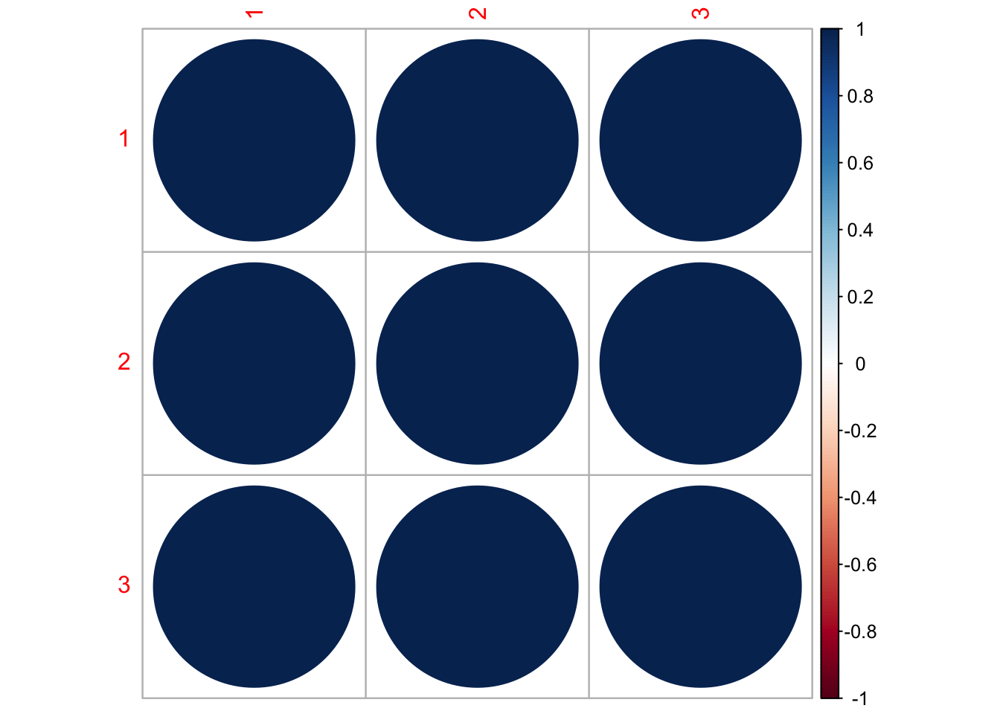
When the data are all collapsed by run timing, all runs show high positive correlation with each other. We know this is a false way to group the data, but we can try to fit a model with grouped fall & late fall runs and separate spring run populations.
mod.list7 <- list(
U = "unequal",
R = "diagonal and equal",
Q = "unconstrained",
Z=factor(c(rep("fa", 7), 'Sp1', 'Sp2', 'Sp3', 'Sp4'))
)
fit7<-MARSS(chin_newdat, model=mod.list7, method = "BFGS")Success! Converged in 243 iterations.
Function MARSSkfas used for likelihood calculation.
MARSS fit is
Estimation method: BFGS
Estimation converged in 243 iterations.
Log-likelihood: -492.6786
AIC: 1049.357 AICc: 1056.351
Estimate
A.Lewis River - fall 1.71326
A.Lower Cowlitz River - fall 3.26751
A.Toutle River - fall 1.87432
A.Upper Cowlitz River - fall 0.97929
A.Lewis River - late fall 4.07056
A.Sandy River - late fall 3.07716
R.diag 0.91670
U.fa 0.01418
U.Sp1 -0.09593
U.Sp2 -0.04996
U.Sp3 0.02676
U.Sp4 0.00991
Q.(1,1) 0.17211
Q.(2,1) 0.17385
Q.(3,1) 0.11997
Q.(4,1) -0.01898
Q.(5,1) 0.09557
Q.(2,2) 0.22195
Q.(3,2) 0.07276
Q.(4,2) -0.01590
Q.(5,2) 0.11224
Q.(3,3) 0.13417
Q.(4,3) -0.01663
Q.(5,3) 0.05021
Q.(4,4) 0.00232
Q.(5,4) -0.00943
Q.(5,5) 0.05839
x0.fa 5.20535
x0.Sp1 9.21407
x0.Sp2 8.51336
x0.Sp3 6.65876
x0.Sp4 5.68845
Initial states (x0) defined at t=0
Standard errors have not been calculated.
Use MARSSparamCIs to compute CIs and bias estimates.Q7 <- coef(fit7, type="matrix")$Q
corrmat7 <- diag(1/sqrt(diag(Q7))) %*% Q7 %*% diag(1/sqrt(diag(Q7)))
corrplot(corrmat7)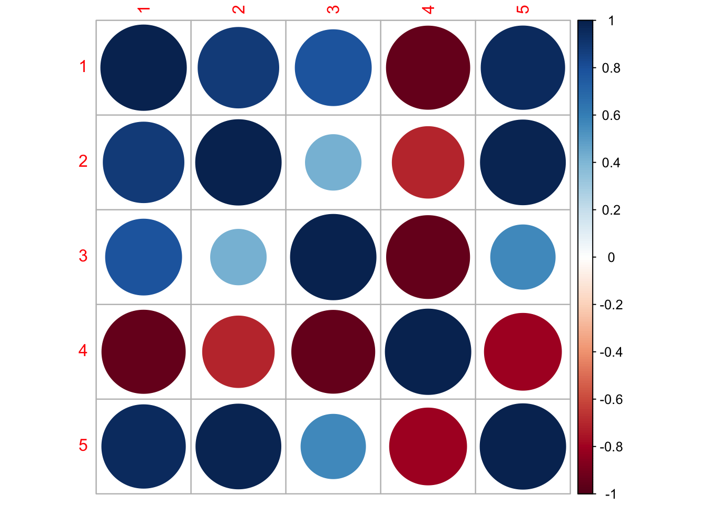
Check the fit of this model if Q is set to diagonal and unequal, which yields a lower AICc than the unconstrained Q for previous examples.
mod.list8 <- list(
U = "unequal",
R = "diagonal and equal",
Q = "diagonal and unequal",
Z=factor(c(rep("fa", 7), 'Sp1', 'Sp2', 'Sp3', 'Sp4'))
)
fit8<-MARSS(chin_newdat, model=mod.list8, method = "BFGS")Success! Converged in 291 iterations.
Function MARSSkfas used for likelihood calculation.
MARSS fit is
Estimation method: BFGS
Estimation converged in 291 iterations.
Log-likelihood: -499.9098
AIC: 1043.82 AICc: 1047.063
Estimate
A.Lewis River - fall 1.67e+00
A.Lower Cowlitz River - fall 3.23e+00
A.Toutle River - fall 1.83e+00
A.Upper Cowlitz River - fall 9.24e-01
A.Lewis River - late fall 4.03e+00
A.Sandy River - late fall 3.05e+00
R.diag 1.03e+00
U.fa 1.23e-02
U.Sp1 -4.52e-02
U.Sp2 -5.56e-02
U.Sp3 2.56e-02
U.Sp4 3.71e-02
Q.(fa,fa) 1.44e-01
Q.(Sp1,Sp1) 2.67e-12
Q.(Sp2,Sp2) 2.54e-12
Q.(Sp3,Sp3) 6.24e-12
Q.(Sp4,Sp4) 1.20e-12
x0.fa 5.24e+00
x0.Sp1 6.88e+00
x0.Sp2 8.25e+00
x0.Sp3 6.76e+00
x0.Sp4 4.44e+00
Initial states (x0) defined at t=0
Standard errors have not been calculated.
Use MARSSparamCIs to compute CIs and bias estimates.autoplot(fit8, plot.type="fitted.ytT")
plot.type = fitted.ytT 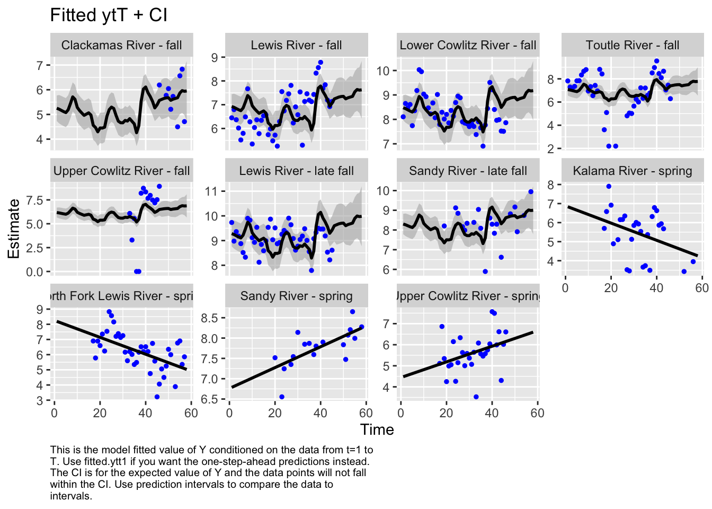
Finished plots.The AICc is quite a bit higher than it was for our preferred models. We can also see that some of the fall populations (e.g. Upper Cowlitz) are not well represented with this model.
We want to subset the data so that we can have three rivers with no NAs. We are choosing Lewis river fall, Lewis river late fall and Lower Cowlitz river from 1964 to 2008.
chin_subset <- chin_newdat[c(2,3,6),1:45]
print(chin_subset) 1964 1965 1966 1967 1968
Lewis River - fall 6.448889 6.792344 6.368187 6.018593 5.517453
Lower Cowlitz River - fall 8.105308 8.649449 8.472614 8.610137 7.741968
Lewis River - late fall 9.732521 8.978030 9.361085 9.181015 8.876265
1969 1970 1971 1972 1973
Lewis River - fall 5.796058 6.487684 7.669495 6.280396 5.347108
Lower Cowlitz River - fall 8.357024 9.180500 10.032672 9.953563 9.034796
Lewis River - late fall 8.514389 8.326033 9.899781 9.824877 9.118225
1974 1975 1976 1977 1978
Lewis River - fall 6.040255 6.364751 5.783825 6.342121 6.532334
Lower Cowlitz River - fall 8.931420 8.469263 8.223091 8.671972 8.068403
Lewis River - late fall 8.929170 9.536690 8.122965 8.843615 8.587279
1979 1980 1981 1982 1983
Lewis River - fall 6.573680 5.739793 5.983936 5.480639 5.720312
Lower Cowlitz River - fall 9.018332 7.790696 8.291797 8.014336 8.203578
Lewis River - late fall 8.990068 9.535246 9.867705 9.032409 9.513404
1984 1985 1986 1987 1988
Lewis River - fall 5.257495 6.291569 7.549609 6.740519 7.180831
Lower Cowlitz River - fall 7.854381 8.366370 8.127995 8.687779 8.948976
Lewis River - late fall 8.872347 8.921458 9.256460 9.410011 9.320539
1989 1990 1991 1992 1993
Lewis River - fall 7.457032 7.811973 6.232448 6.908755 6.577861
Lower Cowlitz River - fall 8.884610 7.900266 7.850493 7.819636 7.704361
Lewis River - late fall 9.906383 9.640693 9.081029 8.613957 8.773694
1994 1995 1996 1997 1998
Lewis River - fall 7.536364 5.298317 7.135687 7.459915 7.192182
Lower Cowlitz River - fall 7.828835 7.710205 7.379008 7.904704 7.653495
Lewis River - late fall 9.042632 9.181426 9.478610 9.007979 8.551208
1999 2000 2001 2002 2003
Lewis River - fall 7.130099 7.431892 8.326517 8.561019 8.782323
Lower Cowlitz River - fall 6.904751 7.767687 8.445053 9.511481 9.215129
Lewis River - late fall 7.790282 9.075780 9.330254 9.494993 9.465912
2004 2005 2006 2007 2008
Lewis River - fall 7.682943 7.838343 7.194437 6.919684 7.135687
Lower Cowlitz River - fall 8.404248 7.962067 7.987524 7.521318 7.510978
Lewis River - late fall 9.467151 9.187583 8.530307 8.218248 8.609772First we want to look at the ACF of each time series to see potential cycles.
par(mfrow=c(2,2))
for(i in 1:3){
acf(chin_subset[i,], na.action=na.pass, main=rownames(chin_subset)[i])
}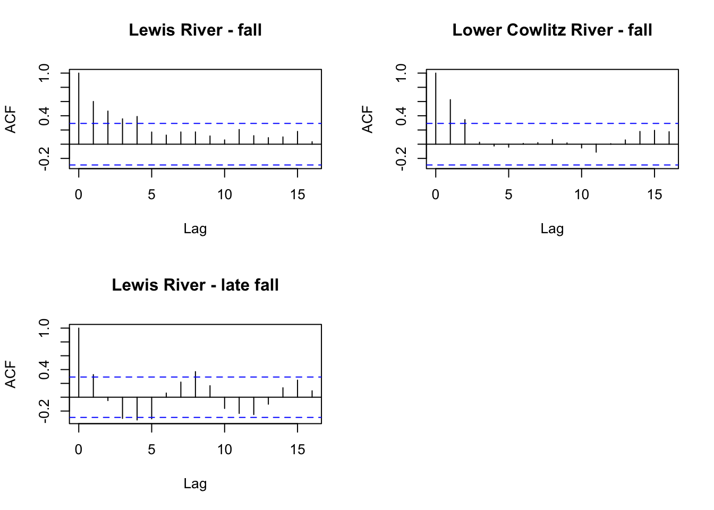
It looks like there might be a 4 year cycle in Lewis river fall. We can test 4 and 5 since Chinook are known to have 5 year cycles.
TT <- dim(chin_subset)[2] #number of time steps
covariates <- rbind(
forecast::fourier(ts(1:TT, freq=4), K=1) |> t(),
forecast::fourier(ts(1:TT, freq=5), K=1) |> t()
)Registered S3 method overwritten by 'quantmod':
method from
as.zoo.data.frame zoo For now, we will choose the best model from the earlier part of the assignment for the MARSS model. However, the best model for the 3 river subset is likely to be different. We will then add the cycles as covariates in the model.
mod.list_cycle <- list(
U = "unequal",
R = "diagonal and equal",
Q = "diagonal and unequal",
D = "unconstrained",
d = covariates
)
fit_cycle <- MARSS(chin_subset, model=mod.list_cycle, method = "BFGS")Success! Converged in 65 iterations.
Function MARSSkfas used for likelihood calculation.
MARSS fit is
Estimation method: BFGS
Estimation converged in 65 iterations.
Log-likelihood: -113.3892
AIC: 270.7784 AICc: 279.8141
Estimate
R.diag 1.92e-01
U.X.Lewis River - fall 1.64e-02
U.X.Lower Cowlitz River - fall -1.90e-02
U.X.Lewis River - late fall -5.62e-03
Q.(X.Lewis River - fall,X.Lewis River - fall) 1.34e-01
Q.(X.Lower Cowlitz River - fall,X.Lower Cowlitz River - fall) 9.35e-02
Q.(X.Lewis River - late fall,X.Lewis River - late fall) 6.85e-11
x0.X.Lewis River - fall 6.57e+00
x0.X.Lower Cowlitz River - fall 8.49e+00
x0.X.Lewis River - late fall 9.22e+00
D.(Lewis River - fall,S1-4) -2.16e-01
D.(Lower Cowlitz River - fall,S1-4) -9.17e-02
D.(Lewis River - late fall,S1-4) 8.73e-02
D.(Lewis River - fall,C1-4) -5.16e-02
D.(Lower Cowlitz River - fall,C1-4) 3.89e-03
D.(Lewis River - late fall,C1-4) 3.07e-04
D.(Lewis River - fall,S1-5) -5.67e-02
D.(Lower Cowlitz River - fall,S1-5) -1.48e-01
D.(Lewis River - late fall,S1-5) -4.41e-02
D.(Lewis River - fall,C1-5) -6.82e-02
D.(Lower Cowlitz River - fall,C1-5) 5.02e-02
D.(Lewis River - late fall,C1-5) -1.18e-01
Initial states (x0) defined at t=0
Standard errors have not been calculated.
Use MARSSparamCIs to compute CIs and bias estimates.We will get the estimates of the covariate effect and it’s confidence intervals.
df <- tidy(fit_cycle) %>%
subset(stringr::str_sub(term,1,1)=="D") # we only want the covariate estimates
#term is the parameter it is estimating
df$lag <- as.factor(rep(4:5, each=6)) #estimating 2 (4 year and 5 year) cycles for 3 rivers
#6 because 2 parameters for each river (sine and cosine)
df$river <- as.factor(rep(rownames(chin_subset),2)) # 2 for number of cycles
df$sc <- rep(rep(c("S","C"), each=3), 2) # 3 for rivers # 2 for cycles
df$type <- paste0(df$sc,df$lag)
print(df) term estimate std.error conf.low
11 D.(Lewis River - fall,S1-4) -0.2158588574 0.10781167 -0.42716585
12 D.(Lower Cowlitz River - fall,S1-4) -0.0917007008 0.10335661 -0.29427592
13 D.(Lewis River - late fall,S1-4) 0.0873051494 0.09203433 -0.09307882
14 D.(Lewis River - fall,C1-4) -0.0515586139 0.10922426 -0.26563424
15 D.(Lower Cowlitz River - fall,C1-4) 0.0038877770 0.10485041 -0.20161525
16 D.(Lewis River - late fall,C1-4) 0.0003071104 0.09380568 -0.18354864
17 D.(Lewis River - fall,S1-5) -0.0567488738 0.11526732 -0.28266866
18 D.(Lower Cowlitz River - fall,S1-5) -0.1477865944 0.10914505 -0.36170697
19 D.(Lewis River - late fall,S1-5) -0.0441016466 0.09301040 -0.22639868
20 D.(Lewis River - fall,C1-5) -0.0681577316 0.11466037 -0.29288792
21 D.(Lower Cowlitz River - fall,C1-5) 0.0502014604 0.10861810 -0.16268610
22 D.(Lewis River - late fall,C1-5) -0.1178414141 0.09312231 -0.30035778
conf.up lag river sc type
11 -0.004551867 4 Lewis River - fall S S4
12 0.110874523 4 Lower Cowlitz River - fall S S4
13 0.267689120 4 Lewis River - late fall S S4
14 0.162517008 4 Lewis River - fall C C4
15 0.209390808 4 Lower Cowlitz River - fall C C4
16 0.184162861 4 Lewis River - late fall C C4
17 0.169170915 5 Lewis River - fall S S5
18 0.066133779 5 Lower Cowlitz River - fall S S5
19 0.138195383 5 Lewis River - late fall S S5
20 0.156572459 5 Lewis River - fall C C5
21 0.263089022 5 Lower Cowlitz River - fall C C5
22 0.064674950 5 Lewis River - late fall C C5Plot the results
ggplot(df, aes(x=type, y=estimate, col=lag)) +
geom_point() +
geom_errorbar(aes(ymin=conf.low, ymax=conf.up), width=.2, position=position_dodge(.9)) +
geom_hline(yintercept = 0) +
facet_wrap(~river) +
ggtitle("The cycle estimates with CIs")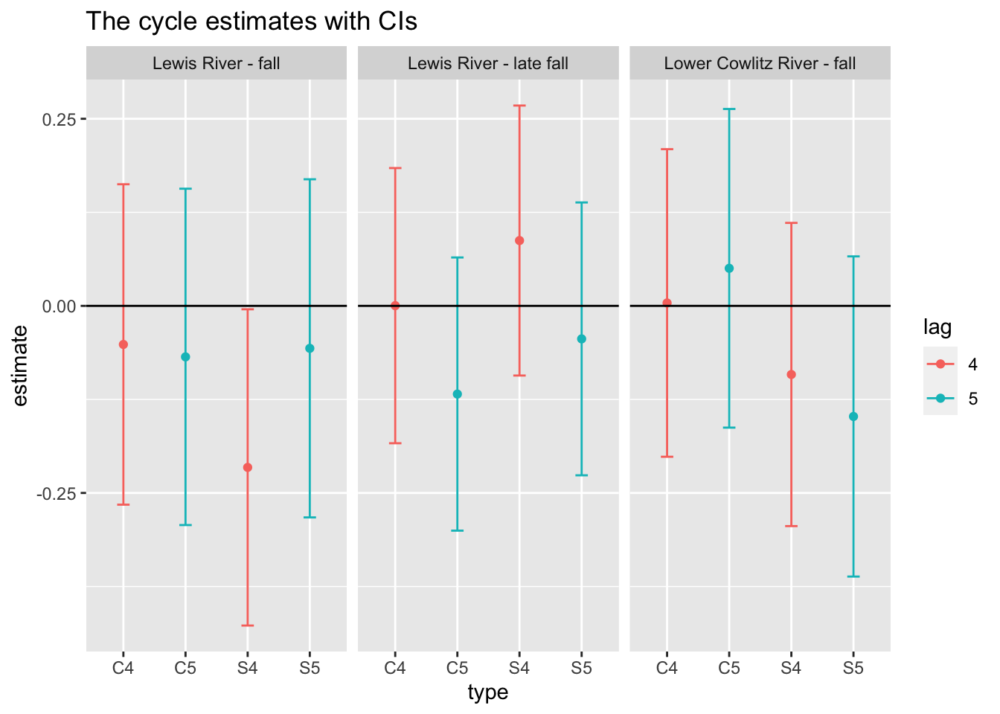
It looks like Lewis river fall has a 4 year cycle.
To see whether the model with cycle fits the model without cycles better, we will specify another MARSS model without the fourier covariates.
mod.list_wo_cycle <- list(
U = "unequal",
R = "diagonal and equal",
Q = "diagonal and unequal"
)
fit_wo_cycle <- MARSS(chin_subset, model=mod.list_wo_cycle, method = "BFGS")Success! Converged in 28 iterations.
Function MARSSkfas used for likelihood calculation.
MARSS fit is
Estimation method: BFGS
Estimation converged in 28 iterations.
Log-likelihood: -118.5044
AIC: 257.0088 AICc: 258.783
Estimate
R.diag 2.09e-01
U.X.Lewis River - fall 1.61e-02
U.X.Lower Cowlitz River - fall -1.55e-02
U.X.Lewis River - late fall -5.80e-03
Q.(X.Lewis River - fall,X.Lewis River - fall) 1.43e-01
Q.(X.Lower Cowlitz River - fall,X.Lower Cowlitz River - fall) 9.39e-02
Q.(X.Lewis River - late fall,X.Lewis River - late fall) 3.81e-14
x0.X.Lewis River - fall 6.45e+00
x0.X.Lower Cowlitz River - fall 8.37e+00
x0.X.Lewis River - late fall 9.22e+00
Initial states (x0) defined at t=0
Standard errors have not been calculated.
Use MARSSparamCIs to compute CIs and bias estimates.AIC for model without cycles is 257 and for model with cycles is 284. There is more support for model without cycles even though we this is Chinook data.
We esimated that 6 of the 11 populations showed a decline from historical abundance, with two populations demonstrating a >25% decline in log-abundance. However, other populations were estimated to be increasing, with the populations in the Upper Cowlitz river (both spring and fall) showing very large increases in abundance. However, we’re not sure all of these results are reasonable, specially these levels of increase in the Upper Cowlitz river, and these results change with the different model formulations we tested. Though our best model had the lowest AICc, perhaps more models should be tested to confirm these results.
Residuals for model 1 (hyp. 1) did not show an association with time; however, in the residuals for model 4 (best hyp. 2 model) some of the populations did still show an association with time. This further supports our selection of model 1 as our best model.
We found that the population abundances of fall and late fall Chinook were positively correlated, with additional structure according to geographic proximity. Spring run populations showed higher differentiation from each other. However, when fall populations were grouped the model AICc was not improved. There is likely environmental and/or biological association among the fall and late fall run populations but they should be considered separate populations in our models.
When we evaluated the evidence for 4 and 5 year cycling in Chinook salmon in a subset of the rivers (Lewis fall, Lewis late fall, and Lower Cowlitz fall), we found that there was some support for a 4 year cycle in Lewis fall data. However, the AIC was much lower for a model without cycles. It is possible that another model with cycles is better.
All members contributed to developing the plan and methods for the analysis. ETS and ZR worked on the code for subsetting the data and fitting the models. ZR wrote the equations for the methods and worked on the results for the first question on historical abundance. ETS analyzed the results in terms of evidence for multiple populations. MK analyzed the evidence of cycling in the data. All team members contributed to the discussion and worked on the report together.